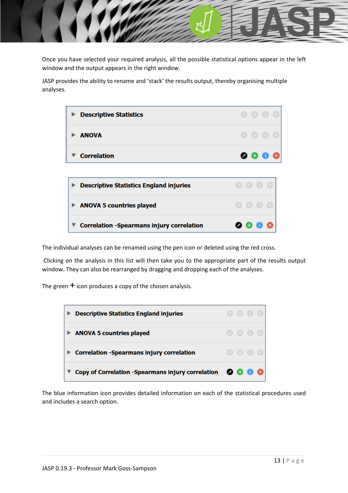

JASP_central_tendency
中央趨勢（Mean / Median / Mode）
JASP_lecture ←→ JASP_descriptive_statistics JASP_dispersion
對應統計概念
mean · median · mode
三種中央指標
| 指標 | 符號 | 計算方式 | 適用 |
|---|---|---|---|
| 平均數 | $M$ 或 $\bar{x}$ | 所有值除以個數 | 連續資料；對極值敏感 |
| 中位數 | $\mathrm{Mdn}$ | 排序後中間值 | 順序資料、無母數、對偏態與離群值穩健 |
| 眾數 | mode | 最常出現的值 | 直方圖最高條 |
母體 vs 樣本
當分析對象是整個母體 → 用 population mean / median / mode；若是樣本 → 用 sample mean / median / mode。樣本量越大，樣本指標越接近母體真值（JASP_central_limit_theorem）。
JASP 操作
Descriptives > Descriptive Statistics → Statistics 子選單 → 勾選 Mean、Median、Mode。

範例
書中 Descriptive data.csv 範例：M=17.71，Mdn=17.9，mode=20.0。三者接近 → 分配近似對稱。三者差距大 → 偏態（見 JASP_skewness_kurtosis）。
何時用哪個？
- 資料對稱、無極端值 → mean
- 偏態或有離群值 → median
- 類別頻率最高者 → mode
- 順序變數（Likert）報告 median + IQR，不要 mean ± SD
延伸
- 離散：JASP_dispersion
- 概念詳解：social_science_statistics_book §1.2